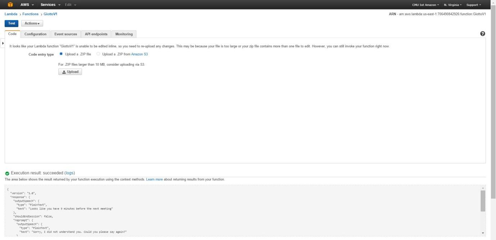
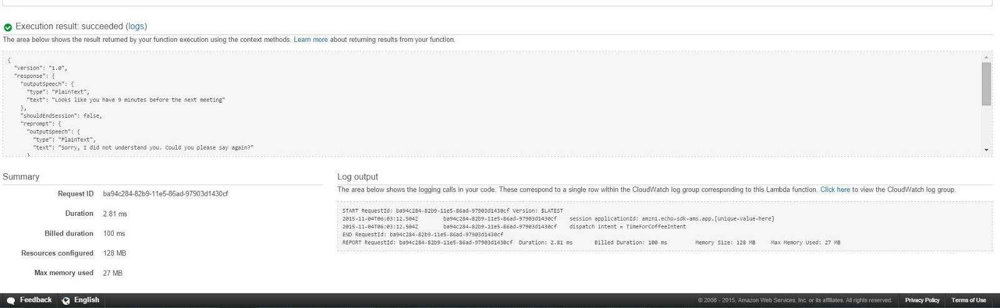
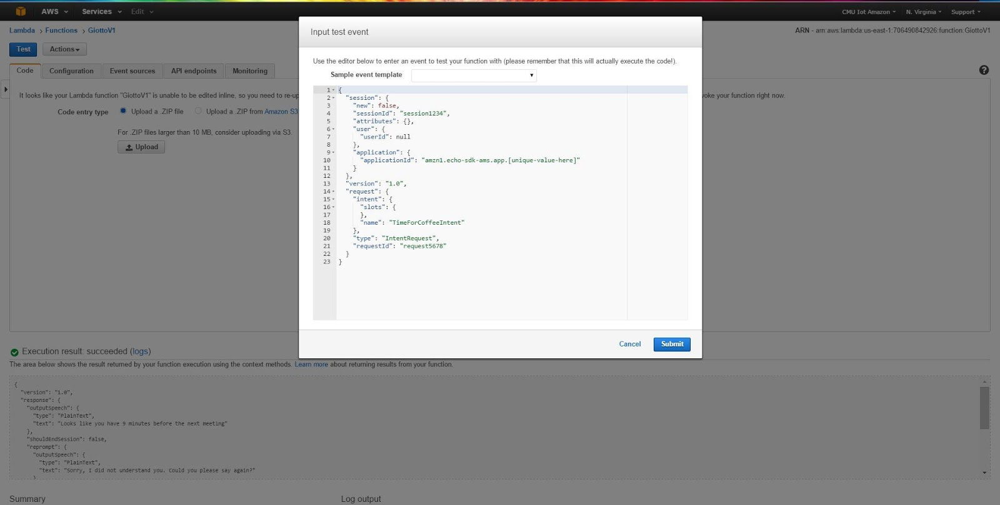
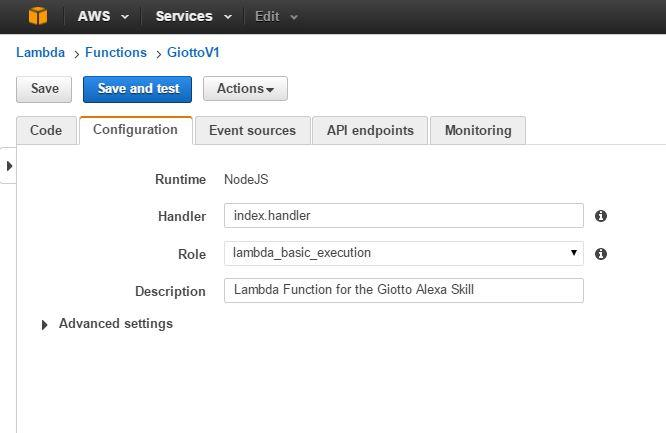
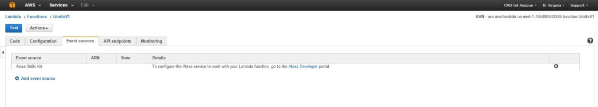
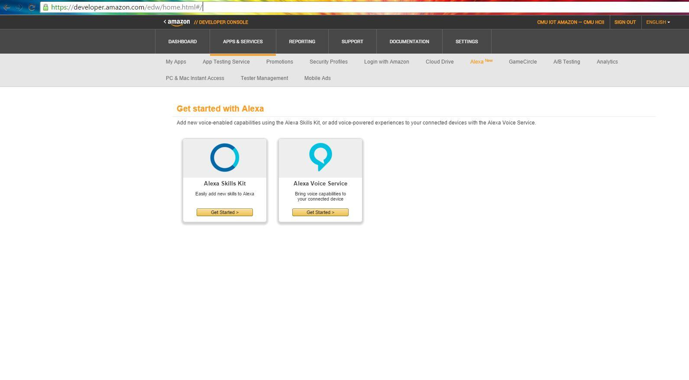
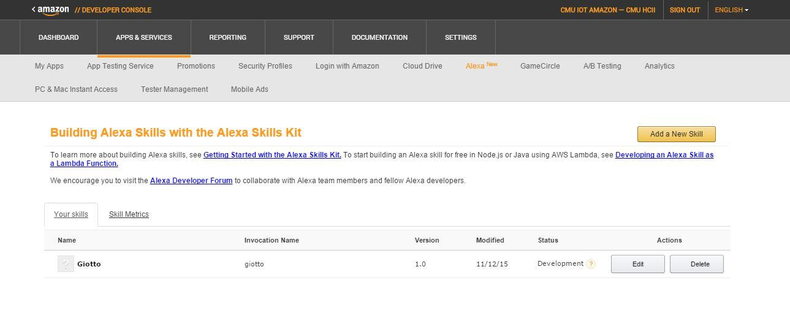
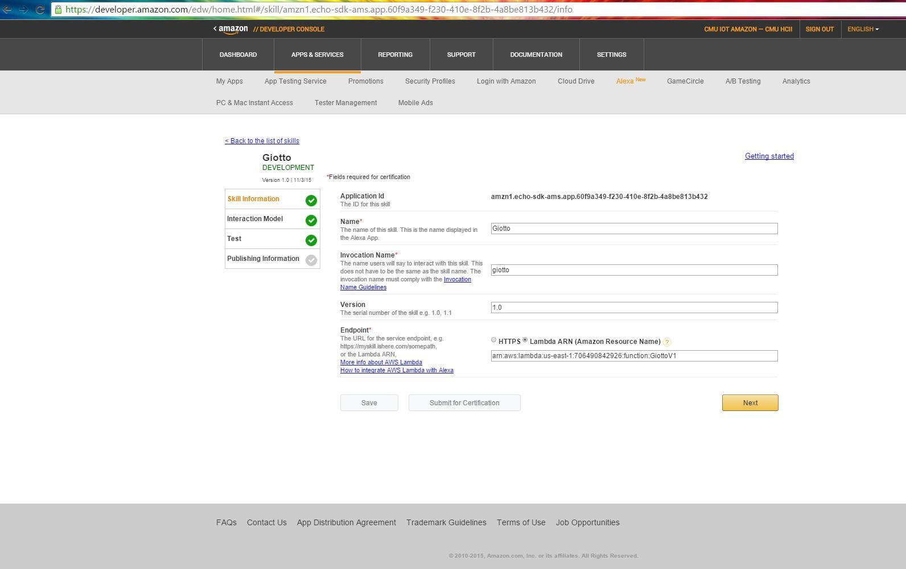
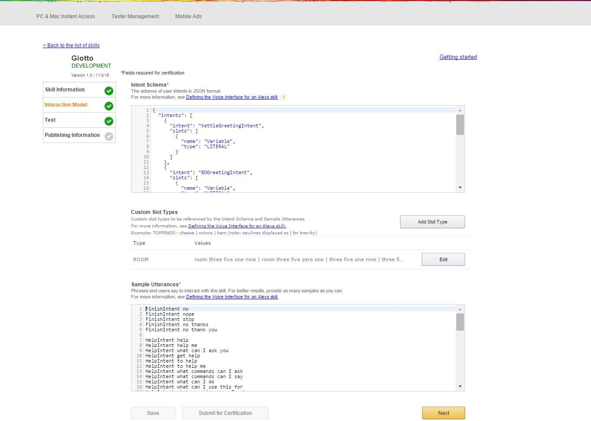

Uploading Alexa Skills to AWS server¶
Alexa Skills Kit is a voice interaction service offered by Amazon. It is used through the Amazon Echo Device.
Lambda Function refers to the Node.js function located in AWS Lambda. The function can be written in Node.js or Java.
The Alexa Skill is the Skill that we create that specifies the type of commands, their structure, number of inputs, sample utterances of the commands, etc.
When we wake Alexa using the “Wake Word” (either “Alexa” or “Amazon”, which can be changed in the Alexa Phone Application settings), it starts to stream the audio to the Alexa Skill for voice recognition. Once the command given by the User is identified, it sends a JSON Request to the Lambda Function, specifying the type of command. The Lambda Function processes the request as required, connecting to the Database or any other Web Services, and it formats a Response. The response must have a SpeechText which is the text that the Echo Device responds with. The Lambda Function can also send an optional Card that is sent to the Alexa Mobile Application. This can be used to present more detailed information that is too complex for the Echo Device to just talk back. The Lambda Function sends this response to the Alexa Service which automatically sends it back to the Echo Device which speaks the text it received as the SpeechText. This response is of two types, it can either “Ask” or “Tell”: Tell means it can either just say the response and end its session and to interact again we need to invoke it again. Ask means it can give the response and wait for the user’s next command to proceed.
This is the general working of the Alexa Skill. In this, we develop the Lambda Function that processes the request of the user and formats the response. The Speech-to-Text and Text-to-Speech part is automated so we need not worry about that. This function needs to be created/edited in the local machine either in a Text Editor/IDE.
By now the following terms should be clear: Alexa Skill Lambda Function Amazon Echo Device
The Lambda Function Homepage. Choose which Lambda Function which you need to change or you can create a new Function also.
This is the page of the selected Lambda Function. Here you can Upload new code for the function Change configurations of the function Edit the Event Sources Test the Lambda Function by giving it sample inputs and view the execution results of the Lambda Function. Identify syntax errors or logical errors through the “Log output” section.
The Execution result section shows the JSON Response of the Lambda function. The SpeechText and the Card details can be viewed in this. Also the session_attributes that are used in the function are displayed.
The Log output section shows the text that we log in the code and if there is an error in the Lambda Function, it will be displayed here with the Line number for easy identification of the error.
The Summary section mainly shows that Duration of Execution and the memory used for the execution.
By clicking “Actions” button near the “Test” button, and choosing “edit sample event” the above screen is displayed. We can edit the JSON request that is sent to the Lambda Function and change the Intent, slots for the intent, etc.
This is the configuration window. Here we can specify different roles for the Function to give it more access to other AWS Functionalities. (Not important right now)
This screen displays the Event sources for the Lambda Function. Without giving the Alexa Skills Kit event source, you will not be able to link the Alexa Skill with this Lambda Function.
This is the homepage of the Alexa Skills Kit. We need to choose “Get Started >” on the Alexa Skills Kit.
This page lists all the Alexa Skills that our account currently has (For now just 1). Choose Edit to change the Skill.
This is the Skill Information page of the selected skill. Here the name, version, etc. are displayed. The Invocation name means the name that is used to call the function by the User. The Endpoint must specify the Lambda Function that is associated with this Skill.
This page shows the Intent Schema section. We need to specify a schema for all the intents that we specify whether they accept inputs or not and what types of inputs they accept. The Custom Slot Types can be used to specify new types of input types(Not important right now). The Sample Utterances section is used to enter all the sample utterances for each of the intent that the user may give. This is to make the Alexa Service better understand which intent the user is specifying.
In the next page, we can test the Skill by giving the text of the speech that the user gives and it displays the JSON Request and Response sent to the Lambda Function. We need to set the “Enabled” option for us to test the skill. The “Enabled” option is in the same page.